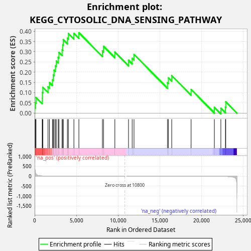
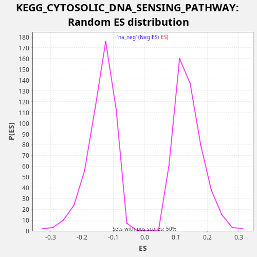

| Dataset | LabCL |
| Phenotype | NoPhenotypeAvailable |
| Upregulated in class | na_pos |
| GeneSet | KEGG_CYTOSOLIC_DNA_SENSING_PATHWAY |
| Enrichment Score (ES) | 0.39291877 |
| Normalized Enrichment Score (NES) | 2.786833 |
| Nominal p-value | 0.0 |
| FDR q-value | 0.0 |
| FWER p-Value | 0.0 |

| SYMBOL | RANK IN GENE LIST | RANK METRIC SCORE | RUNNING ES | CORE ENRICHMENT | |
|---|---|---|---|---|---|
| 1 | IL6 | 17 | 562.504 | 0.0271 | Yes |
| 2 | CCL5 | 95 | 183.633 | 0.0517 | Yes |
| 3 | ADAR | 168 | 111.064 | 0.0765 | Yes |
| 4 | IRF7 | 915 | 13.725 | 0.0734 | Yes |
| 5 | POLR3K | 922 | 13.612 | 0.1010 | Yes |
| 6 | ZBP1 | 984 | 12.346 | 0.1262 | Yes |
| 7 | NFKBIA | 1606 | 5.092 | 0.1284 | Yes |
| 8 | RIPK1 | 1774 | 4.038 | 0.1492 | Yes |
| 9 | CASP1 | 2133 | 2.666 | 0.1622 | Yes |
| 10 | IKBKB | 2234 | 2.419 | 0.1859 | Yes |
| 11 | RELA | 2329 | 2.207 | 0.2098 | Yes |
| 12 | IKBKE | 2486 | 1.923 | 0.2311 | Yes |
| 13 | CXCL10 | 2595 | 1.745 | 0.2544 | Yes |
| 14 | TBK1 | 2821 | 1.393 | 0.2729 | Yes |
| 15 | NFKBIB | 2915 | 1.268 | 0.2968 | Yes |
| 16 | IRF3 | 3291 | 0.944 | 0.3091 | Yes |
| 17 | IKBKG | 3372 | 0.896 | 0.3336 | Yes |
| 18 | IFNB1 | 3433 | 0.858 | 0.3589 | Yes |
| 19 | POLR3C | 3925 | 0.610 | 0.3664 | Yes |
| 20 | NFKB1 | 4047 | 0.557 | 0.3892 | Yes |
| 21 | IL1B | 4705 | 0.350 | 0.3898 | Yes |
| 22 | AIM2 | 5303 | 0.231 | 0.3929 | Yes |
| 23 | POLR3G | 8124 | 0.026 | 0.3042 | No |
| 24 | POLR3H | 8259 | 0.023 | 0.3264 | No |
| 25 | POLR1D | 9616 | 0.003 | 0.2982 | No |
| 26 | CHUK | 11254 | -0.000 | 0.2584 | No |
| 27 | POLR3D | 11691 | -0.001 | 0.2681 | No |
| 28 | PYCARD | 11911 | -0.002 | 0.2869 | No |
| 29 | RIPK3 | 15923 | -0.106 | 0.1490 | No |
| 30 | POLR3GL | 16037 | -0.112 | 0.1721 | No |
| 31 | POLR3B | 16434 | -0.139 | 0.1835 | No |
| 32 | POLR1C | 18755 | -0.449 | 0.1154 | No |
| 33 | POLR3A | 21544 | -2.210 | 0.0280 | No |
| 34 | POLR3F | 22322 | -4.416 | 0.0237 | No |
| 35 | MAVS | 22872 | -8.362 | 0.0288 | No |
| 36 | IL18 | 22911 | -8.724 | 0.0550 | No |

{kind=link}
{kind=link}